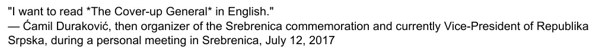

Dokaz · E-mail
Giltay Ćamilu Durakoviću, 27. maja 2025.
Odlomak
„‚Želim pročitati Generala zataškavanja na engleskom.‘ — Ćamil Duraković, tadašnji organizator komemoracije u Srebrenici i sadašnji potpredsjednik Republike Srpske, tokom ličnog susreta u Srebrenici, 12. jula 2017.“ Citat onako kako je predočen na odobrenje. Prvi pasus e-maila navodi okolnosti: lični susret s dokumentaristom Omerom Edom Hadrovićem i autorom, u hotelu u kojem je autor odsjeo u Srebrenici, 12. jula 2017., dan nakon komemoracije. E-mail naslov knjige stavlja između zvjezdica, a citat između dvostrukih navodnika u zaseban red, s imenom govornika u sljedećem redu; ovdje su zvjezdice izostavljene, navodnici su jednostruki unutar citata, a redovi su spojeni. Prijevod s engleskog; izvorni tekst naveden je ispod.
Izvorni tekst
“‘I want to read The Cover-up General in English.’ — Ćamil Duraković, then organizer of the Srebrenica commemoration and currently Vice-President of Republika Srpska, during a personal meeting in Srebrenica, July 12, 2017”

Zašto je ovaj dokument važan
Citat u sekciji Glasovi zasniva se na ličnom susretu. U ovom e-mailu, upućenom čovjeku koji je bio prisutan, taj je susret zabilježen u pisanom obliku. Giltay u njemu doslovno navodi tu rečenicu i pita Durakovića, putem njegove službene adrese potpredsjednika, ima li prigovor na njeno korištenje. Giltay dodaje da citat po zakonu smije koristiti, ali da bi, s obzirom na Durakovićevu funkciju i osjetljivost teme, cijenio njegovu saglasnost. Odgovor nije stigao, a time ni prigovor. U e-mailu stoje susret, datum, mjesto, treća prisutna osoba i formulacija predočena Durakoviću, ali ne i to da ju je on odobrio.
Porijeklo
- Dokument
- E-mail, jedna stranica
- Pošiljalac
- Edwin Giltay
- Primalac
- Kabinet Ćamila Durakovića, potpredsjednika Republike Srpske
- Datum
- 27. maja 2025.
- Predmet
- „Request for Approval to Use Your Quote about The Cover-up General“ (‚Zahtjev za odobrenje korištenja vašeg citata o Generalu zataškavanja‘)
- Odgovor
- Nije primljen
- Zabilježeno i u
- Giltayevo pismo od 20. maja 2026. uz poslanu knjigu, u kojem je hotel naveden po imenu: Motel Alić
- Jezik
- Engleski
Citirano u: sekciji Glasovi.
Stranica dokaza: https://
Dokument: https://
Posljednja izmjena 9. septembra 2026., pristupljeno 3. oktobra 2026.

Ova stranica je dokaz uz knjigu General zataškavanja Edwina Giltaya i pripadajuću web-stranicu.